Sep 21, 2026loadingprogress-indicatorsresearchmotiontonenostalgicsereneedgyOpen live demo
Research
Started with loading as a topic rather than with sketches, because determinate and indeterminate is not a style choice. It is a claim about what the system knows.
How long is the wait
The threshold picks the type. One catch: hold the indicator back about half a second past the limit, because flashing a spinner at work that finishes quickly makes the interface feel slower. Knowing when not to appear is part of the job.
Determinate or indeterminate
Determinate
Indeterminate
Claims
This much is done
Something is happening, length unknown
Use when
The system can count, past 10 s
Short waits, or nothing countable
Must
Track the real thing, never reassure
Never stall
Screen reader
role="progressbar" plus live aria-valuenow
Same role, aria-valuenow left out
As soon as progress becomes knowable, an indicator should move from the right column to the left. Direction is fixed too: linear runs leading edge to trailing, circular starts at the top and turns clockwise.
Why the same wait feels different
Finding
Source
What I take from it
Backwards ribbing that decelerates cut perceived duration about 11 percent
Harrison and others, 2010
Motion direction is a lever, not decoration
More, smaller steps read as faster; fewer, larger steps stretch the wait
Ziat and others, 2022
Step granularity is a tone control
A skeleton previews the layout, a spinner spotlights the delay
Repeated everywhere, no controlled study
Trust the direction, not the 30 percent figure
Rules the tone has to survive
Rule
What it forces
Keep moving
A frozen loader reads as a frozen app
Stay proportional
Small update, small indicator
Speak plainly
“Saving changes”, not “API request pending”
Offer a way out
Cancel on long work, when it is safe
Do not block
Let background work run and report back
Never motion alone
Status needs text, and has to park under reduced motion
Pattern survey
Sixteen existing patterns on one shared clock, so the same real duration can be compared across forms. The last group separates form from placement: a button state and an inline state are the same shapes put somewhere specific.
Live demo. Interact with it here or open it on its own.Open full screen
At 10 seconds the numeric readout is the most precise and the least bearable, because there is nothing to watch between updates. The segmented bar at 20 steps feels quicker than the smooth bar over an identical duration, exactly as the study predicts.
Into the designs
Both halves of a set share a tone, not a shape. A bar squeezed into a circle is not the same indicator.
Granularity, easing, and direction are where tone lives, and critique can argue with all three.
Each set needs a named context, because an indicator has no tone without something to be the tone of.
Status text is part of the design. Three tones should produce three different sentences.
Sources
Loading in Web and Mobile Interfaces, my compiled guide, drawing on Nielsen Norman Group, Apple Human Interface Guidelines and Material Design
Next: three tones, named with their contexts, then sketches before any code.
Ideation
Loose sketches before the three tones are picked. Each one runs live in its box.
Ball chainFifteen chains hang still. A circle sweeps across their lower ends in place of an indeterminate bar, and only the chains it touches sway, then settle.Open full screenBar and ballThe plainest version: a circle slides end to end along a thin bar and eases into each turn.Open full screenStarEight rays from one centre. A circle on each runs out and back, one ray after another, so the pulse travels round clockwise.Open full screenEdgeThe whole screen edge is the bar. A line fills clockwise just inside the margin, from top centre, while the number in the middle counts the same progress.Open full screenRallyA first-person try at depth with nothing but the ball. Like a tennis rally, it comes straight back to you down the middle, and every shot leaves for the far left, then the far right.Open full screenGlowOpacity alone. One box sits still in the middle and slowly brightens and fades, like a light breathing on and off.Open full screenHourglassAn hourglass made only of small grains. The sand in the top and the mound below, narrow on top and wide at the base, never change. Only the flow moves: grains slide out of the top sand into the neck and fall without end, thinning as they go like a thick liquid.Open full screenWashThe whole screen is the bar. Colour washes in from the left behind a soft gradient front, and once the screen has fully changed colour, loading is done.Open full screenWash, ripplingWash developed. Same fill from left to right, same finish, but the soft gradient front sways like water and never holds a straight line.Open full screenTapAn open-ended wait. A film still, a hand on a desk beside a telephone, redrawn in grey dots, each sized and shaded by the brightness under it. Only the index finger moves, tapping the desk at a slow, even beat with no end set.Open full screenStairwellAfter In the Mood for Love. A red gap opens in the dark and a woman in a qipao, seen from the waist up, climbs into it, back to us. She turns, walks out behind the left wall in the same dark as the wall, and the empty red floods the screen. Only her motion is step-printed at 10 fps. Open full screen for the controls.Open full screenCorridorDepth is the progress. A flat box's back wall slowly draws away and the box deepens into a long hall of plain planes, darker the further in. When the far wall is as far as it goes, loading is done.Open full screenGustA spinner made of a swarm of particles gathered like a gust of wind: a wide, rounded head and a body that thins to nothing, wheeling round. Each grain is born at the head and drifts back along the body, wavering, until it fades at the tail.Open full screenReedsTall, thin bars in black and white stand in rows, each row overlapping the one behind so they lock together like a stretched, pixel-sorted field. Their tops rise and fall on slow waves that roll sideways through every row, a little out of step, so the whole field ripples.Open full screenReeds, flatReeds pressed into one flat layer. Every line is split in two, light above and dark below, each at a slightly different height. Together the splits draw one wavy boundary that rolls sideways without end.Open full screenBounceOne ball bouncing in place. Fast off the floor, a moment's hang at the top, then quicker and quicker back down, stretching as it falls and squashing flat as it lands, while its shadow tightens beneath it.Open full screenRose trailAfter Original Thinking in paidax01's math-curve-loaders. A faint seven-petal rose curve with a comet of dots running round it, solid at the head and fading down the tail, while the petals breathe and the figure slowly turns.Open full screenRipple dotsA halftone ring of dots on a honeycomb grid, round with an empty middle. Rings of larger dots keep swelling out of the inner edge and travelling to the outer one, where they shrink away, so the ring breathes outward without end.Open full screenEclipseA dark disc with light spilling round its edge in two layers, each a wavy shape filled with a gradient that fades outward from the rim: a wide warm layer swelling slowly one way, a tighter white-blue one wavering quicker the other. As they drift over each other, the halo shimmers.Open full screenTwistThin lines of light wound round an unseen ring like strands of a rope. It starts as one wavering loop; strand by strand more join and the rope fattens into a twisted cord, then unwinds back to one loop. Near strands bright, far ones dim, all flowing round as the ring slowly tips and turns.Open full screenVortexA black sphere resting on a plane, seen at a slant, with streaks of light circling it like a whirlpool or the disc round a black hole. Near the sphere they crowd in and race, far out they drift; far-side streaks pass behind it, near ones sweep in front.Open full screenBloomFree particle motion. Thousands of specks of light on the skin of a ball; a slow current pushes the skin out of shape so it crumples and unfolds into loose petals, like cloth or a flower opening, then gathers back, never quite repeating. Near specks bright, far ones faint, each glinting on its own.Open full screenLine countA wide field of vertical line fragments, each a different length. As the count climbs from 1 to 100, the fragments in the columns a figure passes through snap up or down onto it, stretch and swell thick, so the lines themselves build the number; the rest scatter as thin splinters that twitch to new places.Open full screenCrackFour pale panels fill the screen, parted by two thin black cracks that pool where they cross, the panels' corners rounding off like a joint in enamel. While loading, the cracks dart about and tilt, each arm swelling and thinning on its own, so every panel keeps changing its width and height. When done, the four panels fly off to the four corners.Open full screenBrush ringA circle dragged in white with a dry brush: broken strokes of every weight round it, heavy and bright on one side, thinning to scratches and flecks on the other. It turns one way, eases to a stop, and turns back the other way, again and again.Open full screenBrush halvesTwo dry-brush circles, each centred on a side edge so only its inner half shows. Both turn together the same way, ease to a stop, and turn back the other way, again and again.Open full screenSpiralA solid circle in the middle. As the work loads, grains fly in one by one and settle into a spiral that starts at the circle's edge and winds outward round it. The share of the spiral laid down is the progress; when it has wrapped all the way out, loading is done.Open full screenCoilA circle drawn as one thin line, standing upright and slowly tumbling about a 45 degree axis. As the work loads, grains fly in and wind round that line like thread round a hoop, passing behind it and back over the front, working their way round. The share of the hoop wrapped is the progress; when the coil meets its own start, loading is done.Open full screen
Deliverables
Six indicators, a pair for each tone: one indeterminate, one determinate. Each tone shows its Figma drawings first, every indicator in its three states, then the moving prototypes.
Nostalgic
Process
How the pair got here, one saved version at a time.
Determinate
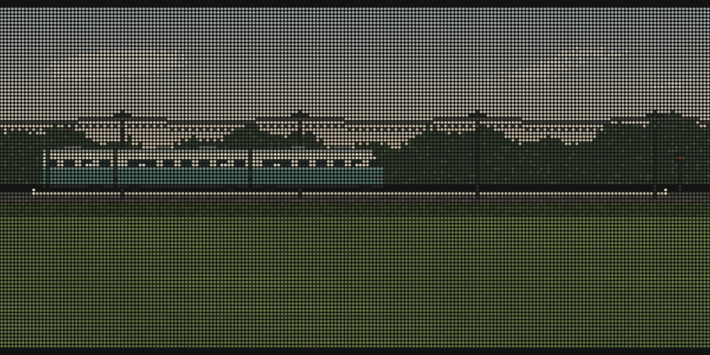
A local train crossing the whole landscape: sky, tree line, poles and wires, a signal at the end of the line.
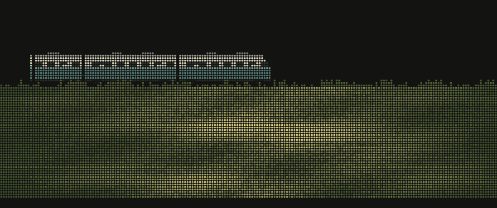
Everything cut but the train and the field, with evening light and wind moving through the grass.
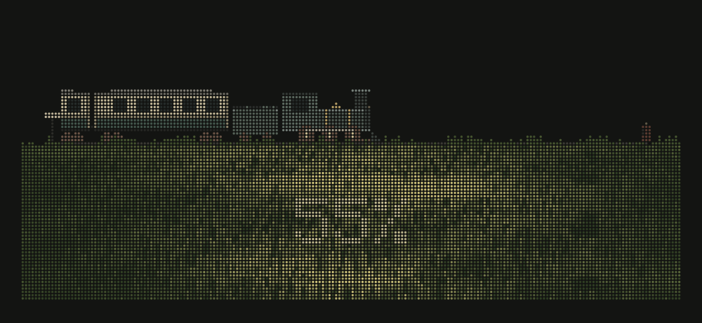
An old steam engine and coaches, a post and a buffer stop to mark start and end, the percentage in the grass.
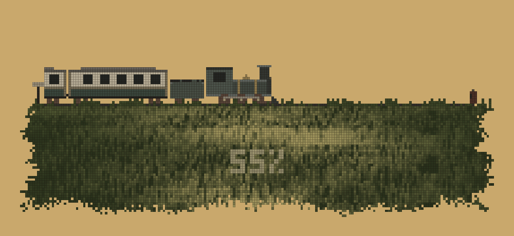
Now: amber page, ragged field edges, shorter wheels, sooty smoke, a smaller figure.
Indeterminate
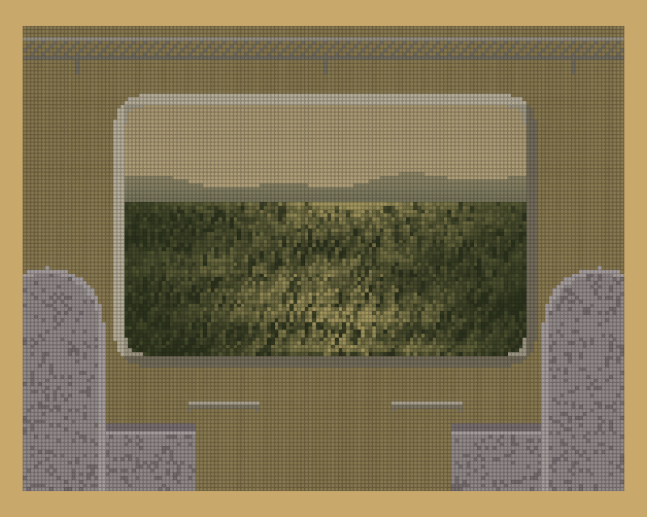
First view from inside: a wood-panelled wall, rack, handles and two boxy seats.
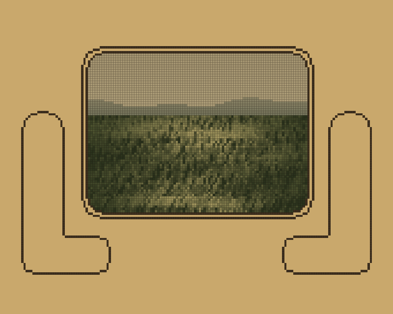
Wall colour dropped for outline; the seats simplified to one line each.
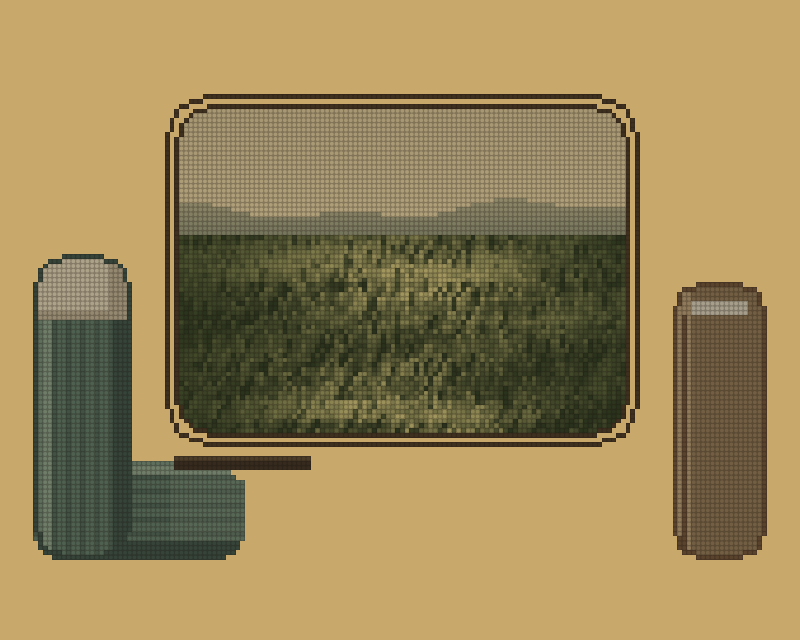
Seats drawn in full after a reference, a striped bench and a seat back. They floated, and read as props.
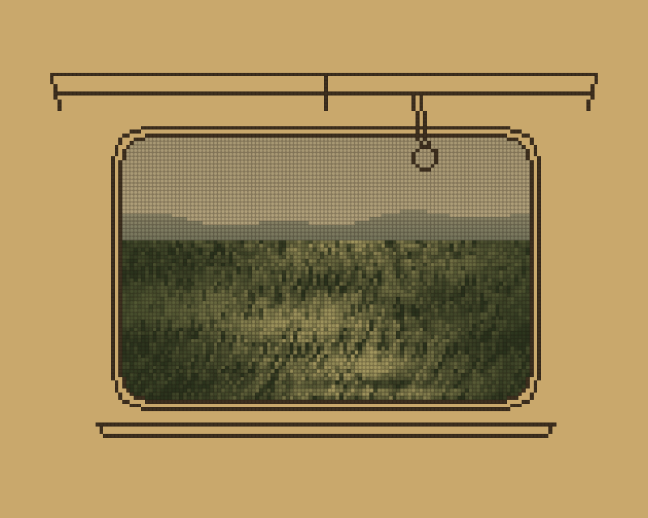
Seats gone. Only lines that say train: window, sill, rack, a hanging strap.
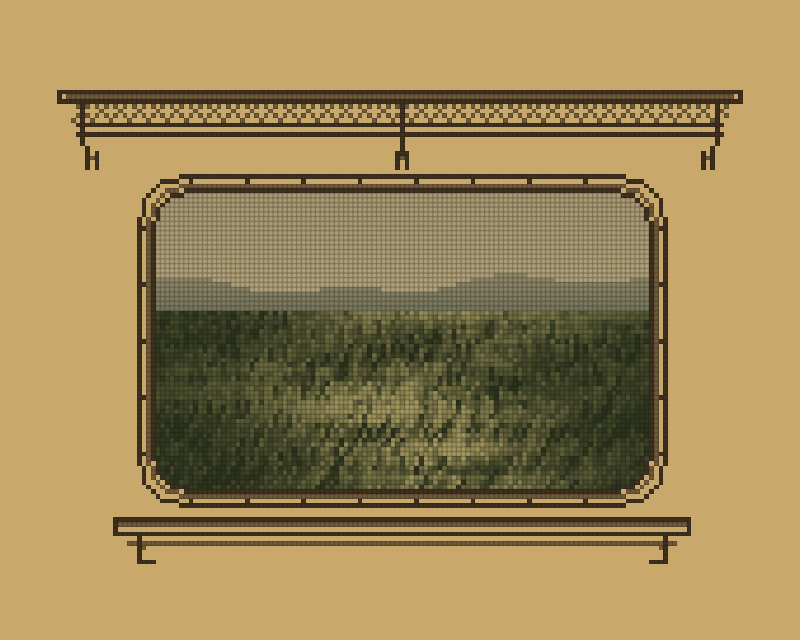
Now: no strap, and the window, sill and rack drawn in more careful line.
Figma drawings
IndeterminateNo end in sight: it loops or keeps turning.
nostalgic-indeterminate-0.png
Default
nostalgic-indeterminate-progress.png
In progress
nostalgic-indeterminate-done.png
Complete
DeterminateShows how much is done, 0 to 100%.
nostalgic-determinate-0.png
Default
nostalgic-determinate-progress.png
In progress
nostalgic-determinate-done.png
Complete
Prototypes
IndeterminateInside the same old train, the carriage drawn only in lines: a round-cornered window in a screwed frame with its seal, a sill on brackets, and a luggage rack of tube rails and net above. The field runs past, evening light and wind moving through it, the near grass quicker than the far; now and then a tree goes by, and every so often the view jolts over a rail joint. It rides on for as long as the wait lasts.Open full screenDeterminateAn old steam train above a rice field, in dots. A post marks the start and a buffer stop the end; the train comes out from the start, engine first, smoke trailing, and the further it gets the more of it shows. At 100% it stands whole between the two with every lamp lit, then the whole scene, field and all, fades away. The percentage is written into the grass, where evening light and the wind keep moving.Open full screen
Serene
Process
How the pair got here from the Reeds sketch, one saved version at a time.
Determinate
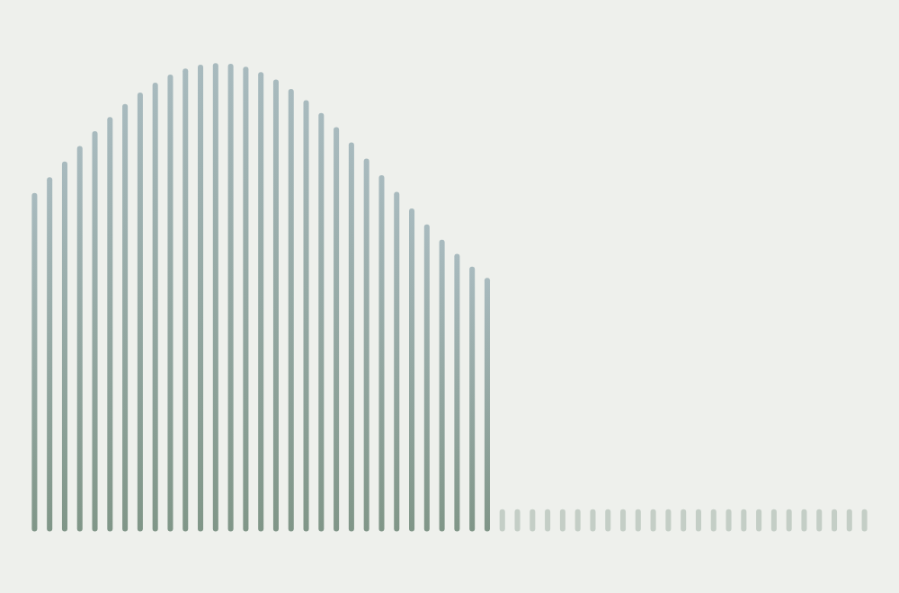
First pass as pure graphic: thin bars on a bare page, growing one by one from the left into a soft wave.
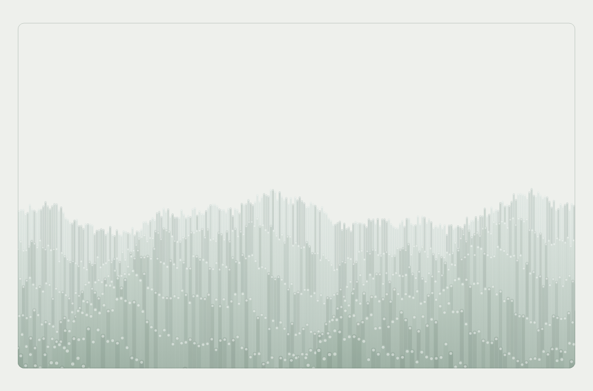
Back to the reeds field as it was, layered rows and wave, now in sage and mist inside a thin rounded frame, rising from the bottom.
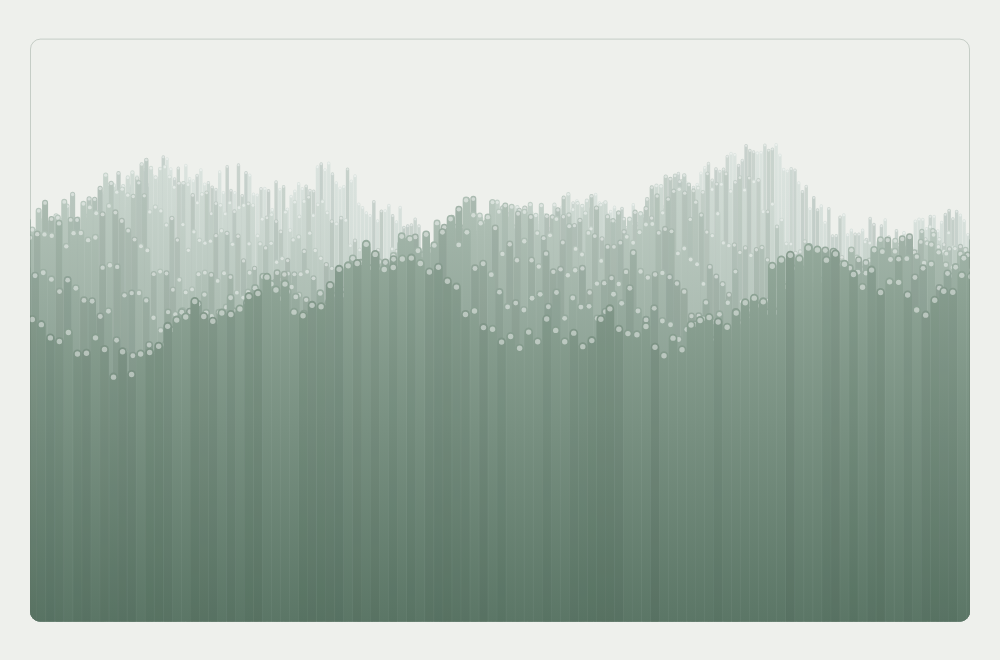
Rows lean closer as they rise, so at 100% every reed reaches the top of the frame.
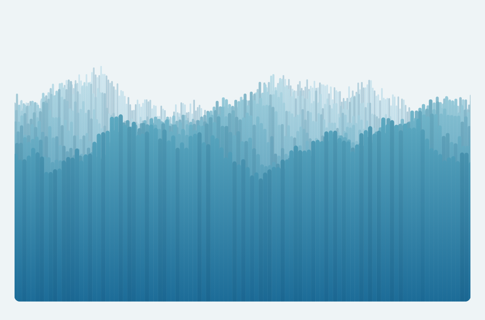
Frame outline and the white tips gone; the colours turned cool, teal over deep blue.
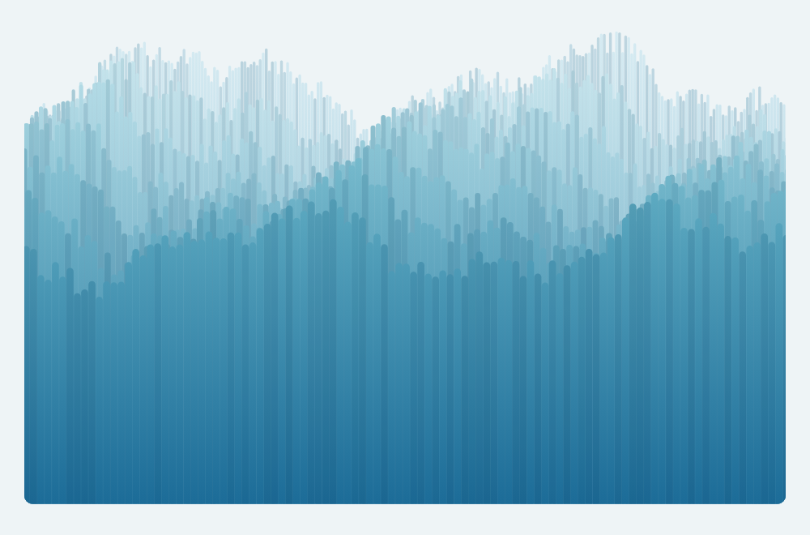
Now: a slower fill, 11 to 18 seconds, and the back rows stand further above the front.
Indeterminate
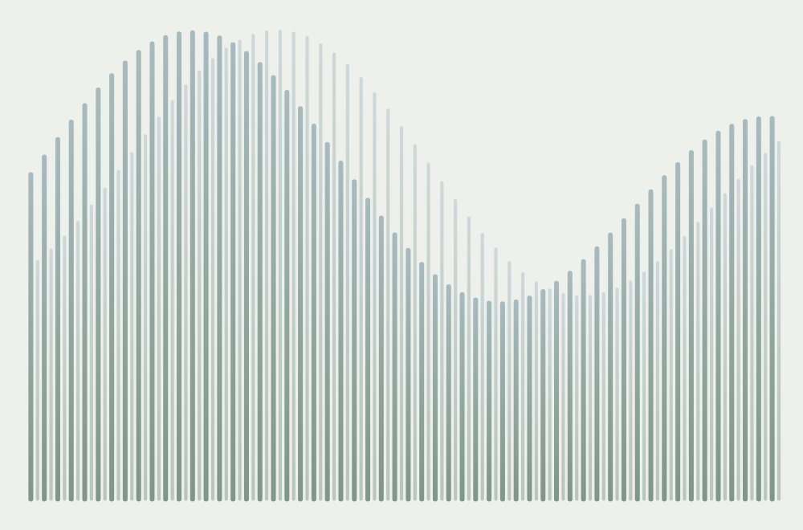
First pass as pure graphic: two interlocking rows of bars under one long, slow wave.
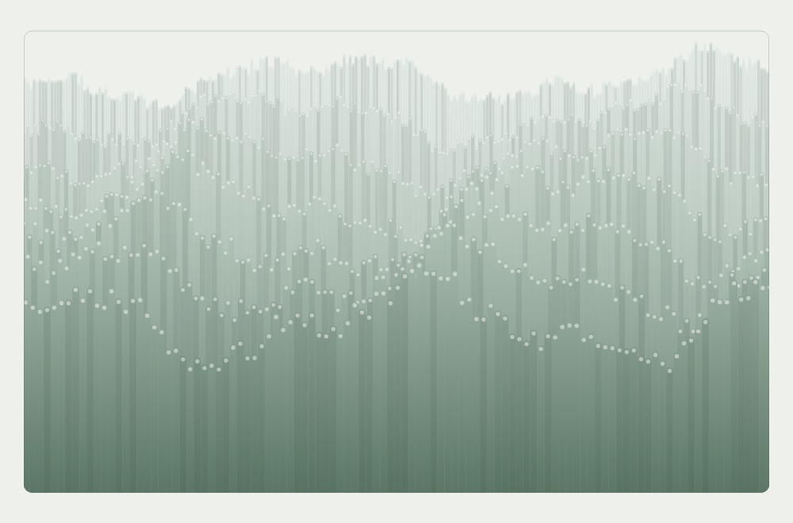
The reeds field kept whole, layers and wave, with rounded tips and a sage and mist palette in a thin frame.
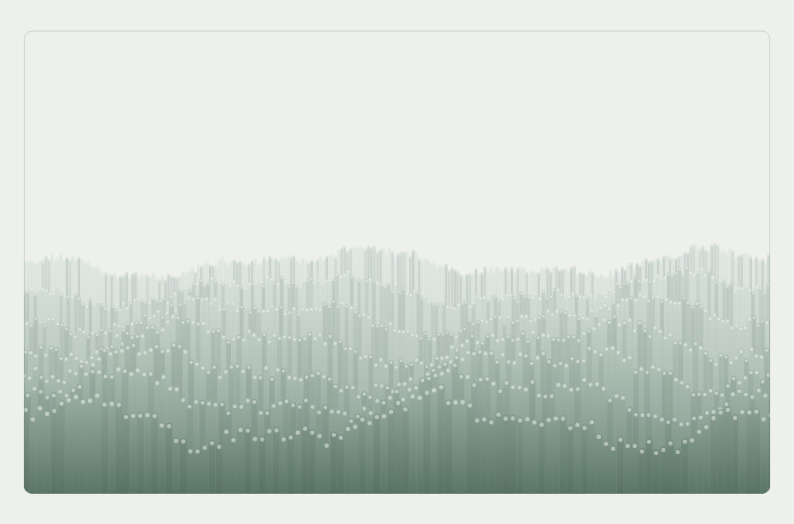
The whole field lowered so the tips sway around the middle of the frame, the top half left empty.
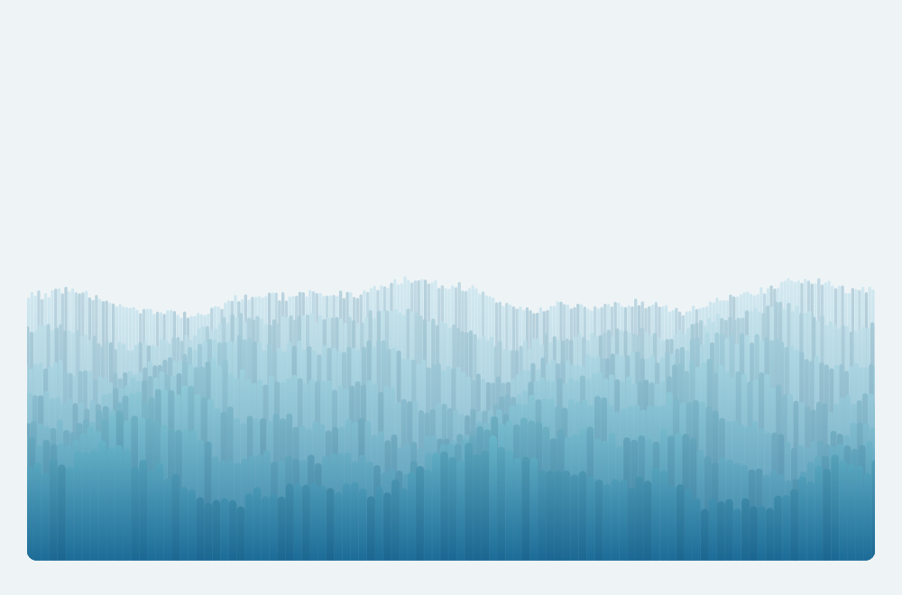
Now: no outline, no white tips, cool teal and blue.
Figma drawings
IndeterminateNo end in sight: it loops or keeps turning.
serene-indeterminate-0.png
Default
serene-indeterminate-progress.png
In progress
serene-indeterminate-done.png
Complete
DeterminateShows how much is done, 0 to 100%.
serene-determinate-0.png
Default
serene-determinate-progress.png
In progress
serene-determinate-done.png
Complete
Prototypes
IndeterminateThe Reeds field in the same depth, rows of stems each covering the foot of the one behind, now with rounded tips and cool colour, pale sky blue at the back into deep teal-blue in front. The field stands low, its tips rippling around the middle of its space as slow waves roll sideways through every row, a little out of step, for as long as the wait lasts.Open full screenDeterminateThe same stems in an unseen frame, growing from its foot as the work loads, so how high they stand shows roughly how much has loaded. Half way the rows and ripples are at their fullest; nearing the end they draw level, and at 100% every stem touches the top.Open full screen
Edgy
Figma drawings
IndeterminateNo end in sight: it loops or keeps turning.
edgy-indeterminate-0.png
Default
edgy-indeterminate-progress.png
In progress
edgy-indeterminate-done.png
Complete
DeterminateShows how much is done, 0 to 100%.
edgy-determinate-0.png
Default
edgy-determinate-progress.png
In progress
edgy-determinate-done.png
Complete
Prototypes
week-01-edgy-indeterminate.html
IndeterminateNo end in sight: it loops or keeps turning.Prototype to come
week-01-edgy-determinate.html
DeterminateShows how much is done, 0 to 100%.Prototype to come